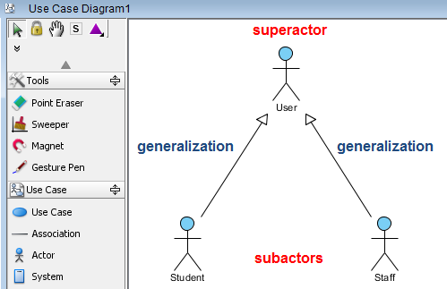
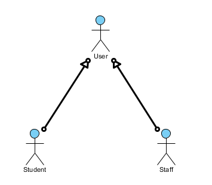
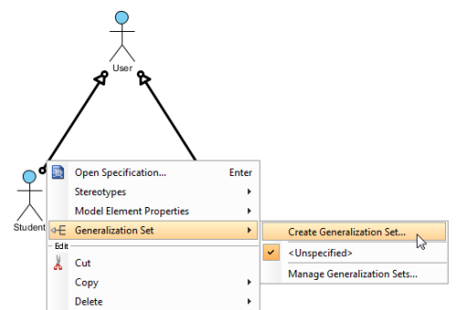
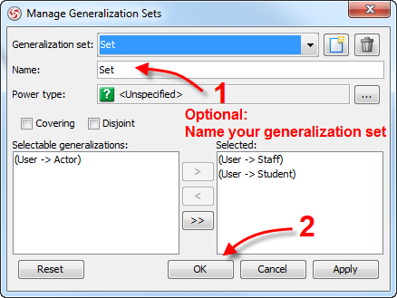
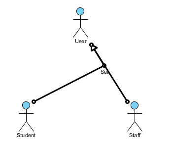
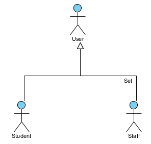
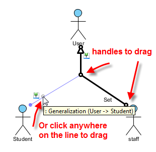

1. Dari ERD ke EERD
ERD Modul 2 memiliki entity PEGAWAI. Setelah kebutuhan diperiksa, dosen memiliki NIDN sedangkan tenaga kependidikan memiliki unit kerja. Satu entity dengan semua atribut akan menghasilkan banyak kolom yang tidak relevan.
2. Supertype dan subtype
Supertype menyimpan atribut umum. Subtype mewarisi atribut umum dan menambahkan atribut khusus. PEGAWAI adalah supertype; DOSEN dan TENAGA KEPENDIDIKAN adalah subtype.
Generalization
Bergerak dari tipe khusus menuju tipe umum.
Specialization
Bergerak dari tipe umum menuju tipe khusus.
3. Praktik visual: membangun EERD
Gunakan canvas diagram yang tersedia di modul ini sebagai panduan sebelum menggambar ulang EERD pada aplikasi pemodelan yang digunakan di laboratorium.
Langkah 1 — Buat supertype
Buat entity PEGAWAI. Masukkan atribut umum yang dimiliki semua pegawai.
Langkah 2 — Tentukan generalization atau specialization
Jika Anda mulai dari DOSEN dan TENAGA KEPENDIDIKAN lalu mencari kesamaannya, itu generalization. Jika Anda mulai dari PEGAWAI lalu membaginya menjadi tipe khusus, itu specialization.
Langkah 3 — Tentukan disjointness
Jawab: apakah satu pegawai boleh menjadi dosen dan tenaga kependidikan sekaligus?
Langkah 4 — Tentukan completeness
Jawab: apakah pegawai yang belum diklasifikasikan boleh tetap disimpan?
Langkah 5 — Gambar relationship lanjutan
Untuk recursive relationship, entity yang sama muncul pada dua peran berbeda.
Untuk ternary relationship, tiga entity bertemu pada satu makna hubungan.
3. Video tutorial: menerapkan generalization pada EERD
Video berikut menggunakan contoh superactor/subactor pada Use Case Diagram. Konsep pengelompokan generalization-nya dapat diterapkan pada EERD, tetapi istilahnya perlu diterjemahkan:
Terjemahan konsep ke EERD
- Superactor pada video menjadi supertype, misalnya
PEGAWAI. - Subactor menjadi subtype, misalnya
DOSENdanTENAGA_KEPENDIDIKAN. - Garis generalization menunjukkan hubungan is-a.
- Generalization set mengelompokkan beberapa subtype yang berasal dari supertype yang sama.
- Setelah set dibuat, tetap tentukan disjointness dan completeness sesuai aturan bisnis.
Gunakan model
PEGAWAI → DOSEN, TENAGA_KEPENDIDIKAN. Jelaskan apakah generalization set tersebut disjoint atau overlapping, lalu tentukan total atau partial. Sertakan alasan dari aturan bisnis universitas.4. Generalization Set: mengelompokkan generalization
Ketika satu supertype memiliki beberapa subtype, garis generalization dapat dikelompokkan menjadi satu generalization set. Tujuannya adalah membuat diagram lebih rapi dan menunjukkan bahwa beberapa subtype berasal dari supertype yang sama.


Ctrl sambil memilih semua garis generalization yang ingin dikelompokkan.
Generalization Set → Create Generalization Set.
Jenis Pegawai.


Supertype:
PEGAWAISubtype:
DOSEN, TENAGA_KEPENDIDIKANNama generalization set:
Jenis Pegawai5. Disjointness dan completeness
Setelah menentukan supertype dan subtype, kita harus menetapkan dua aturan: apakah satu instance boleh berada pada beberapa subtype, dan apakah setiap instance wajib memiliki subtype.
Disjointness: berapa subtype yang boleh dimiliki?
PEGAWAI → DOSEN atau TENAGA KEPENDIDIKANPEGAWAI → DOSEN dan PENELITICompleteness: apakah subtype wajib?
Setiap PEGAWAI harus dikategorikanPegawai baru boleh belum dikategorikanEmpat kombinasi yang mungkin
| Kombinasi | Makna |
|---|---|
| Disjoint + Total | Wajib satu subtype, tidak boleh lebih dari satu. |
| Disjoint + Partial | Boleh belum memiliki subtype, tetapi jika ada hanya satu. |
| Overlapping + Total | Wajib memiliki minimal satu subtype dan boleh beberapa. |
| Overlapping + Partial | Boleh belum memiliki subtype dan boleh memiliki beberapa. |
6. Recursive relationship
Entity dapat berelasi dengan dirinya sendiri. Contoh: DOSEN membimbing DOSEN lain atau PEGAWAI memiliki atasan yang juga PEGAWAI.
Entity-nya sama, tetapi perannya berbeda.
7. Ternary relationship
Ternary relationship melibatkan tiga entity ketika makna hubungan bergantung pada kombinasi ketiganya.
Pertanyaan bisnisnya: supplier mana memasok produk apa untuk project mana?
8. Praktik final EERD
Buat conceptual database model Sistem Akademik yang memuat entity, attribute, primary key, relationship, cardinality, specialization, generalization, dan constraint.
9. Materi dosen untuk diunduh
Materi presentasi EERD tersedia secara lokal di repository untuk pendalaman setelah mengikuti penjelasan codelab.
10. Quiz EERD
PEGAWAI dengan DOSEN sebagai tipe khusus menunjukkan...
Pegawai yang dapat memiliki dua peran menggunakan...